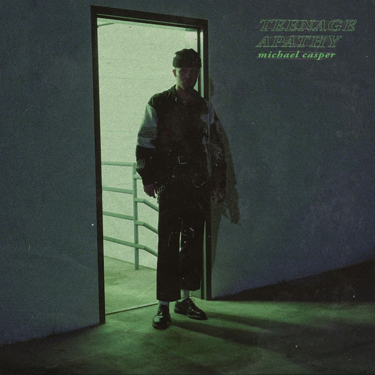
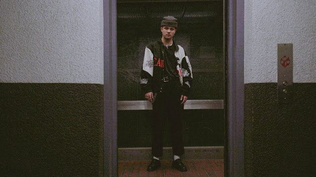
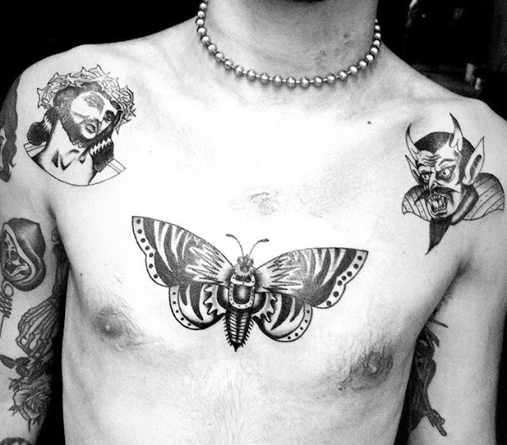

"teenage apathy"
by
MICHAEL CASPER
release date of august 24th, 2018

"teenage apathy: a conversation on the difference between love and codependency.
'i think i only love her because she’s bad for me.'
sometimes it’s hard to decipher whether or not you’re in love or just scared of being alone.
we 'fall in love' without any real reason. the idea of love is very different than actually loving someone.
we fantasize love and romance and will use anyone that will give us attention to fill this space - a temporary placeholder.

we know that the chances of it lasting are slim, yet we think that we are in love regardless, because in that moment we believe it’s real.
the mind is a scary thing when it comes to love. love will make someone do things they wouldn’t normally and act in a way they wouldn’t have before.

relationships - good or bad - show who you truly are as a person. this realization - this conversation - is the experience of teenage apathy."
-michael casper
july 29th, 2018